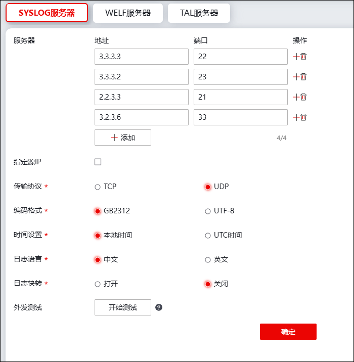
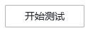
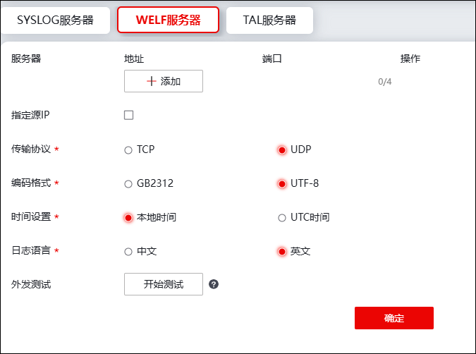
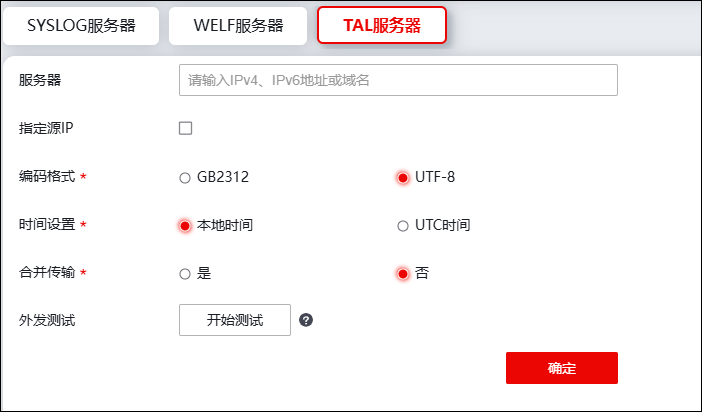

系统日志可保存在本地缓存或硬盘中，当本地存储的日志数量越来越多，本地存储区大小有限导致设备存储不够时，可考虑将记录的日志传送到日志服务器上，NGFW支持的日志服务器包括：SYSLOG日志服务器、WELF日志服务器、TP日志服务器、TAL服日志务器，具体配置如下：
配置日志服务器的步骤如下：
| 步骤1 | 选择 日志服务器配置。 |
lSYSLOG日志服务器

在配置日志服务器时，各项参数的具体说明如下表所示。
参数 |
说明 |
|---|---|
服务器地址 |
必选项，设置日志服务器的IP地址，可输入IPv4或IPv6地址。一个服务器地址文本框输入一个IP地址，点击“+”可新增文本框。 |
服务器端口 |
必选项，设置日志服务器接收日志的服务端口。取值范围：1-65535。 说明： 日志服务器端口必须和设备日志服务器配置页面所指定的端口一致。 |
指定源IP |
选择是否勾选指定源IP。选择“是”时，可设置IPv4源地址和IPv6源地址。 |
传输协议 |
必选项，设置NGFW传输日志至日志服务器中所使用的协议，可选项：TCP、UDP。 |
编码格式 |
必选项，设置NGFW传输日志至日志服务器中所使用的编码格式，可选项：GB2312、UTF-8。 |
时间设置 |
设置日志显示时间。可选择本地时间、UTC时间。UTC时间为协调世界时，又称世界统一时间。 |
日志语言 |
设置日志语言。可选择：中文、英文。 |
日志快转 |
设置是否开启日志快速转发功能。 |
外发测试 |
点击  按钮，可对外发数据进行测试。说明： 外发测试日志，若传输协议使用UDP，无法保证目标服务器能收到日志。开启快转时无法进行外发测试。 |
配置完成后点击【确定】即可生效。
lWELF日志服务器

WELF服务器配置与SYSLOG日志服务器类似，具体配置请参考SYSLOG日志服务器。
lTAL日志服务器

TAL日志服务器配置与SYSLOG日志服务器类似，具体配置请参考SYSLOG日志服务器。其中，合并传输是将不同类型的日志合并传输。
点击【确定】按钮完成日志服务器的配置。